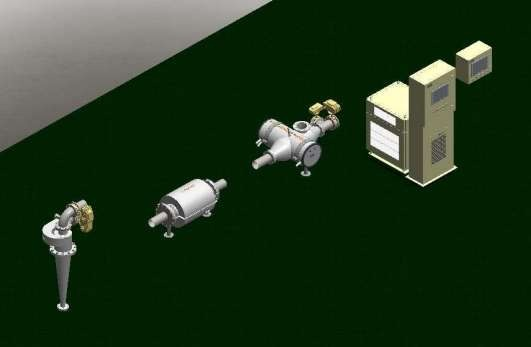
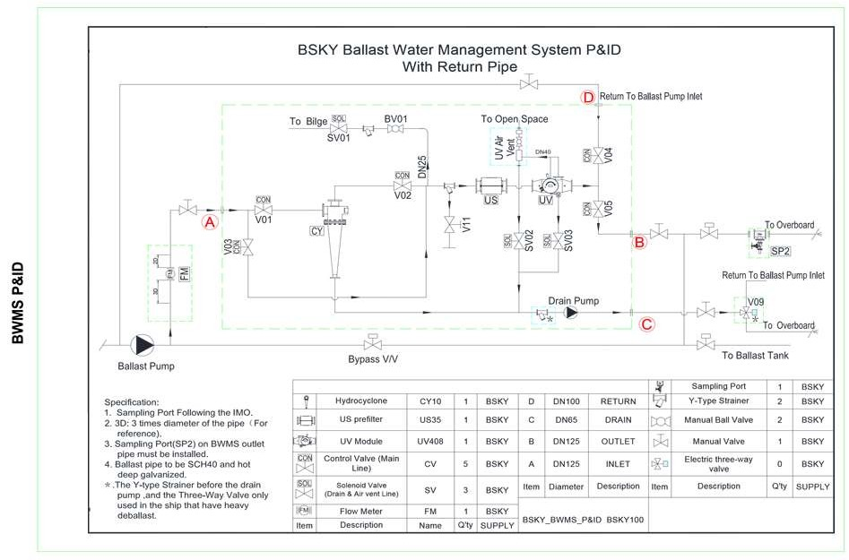
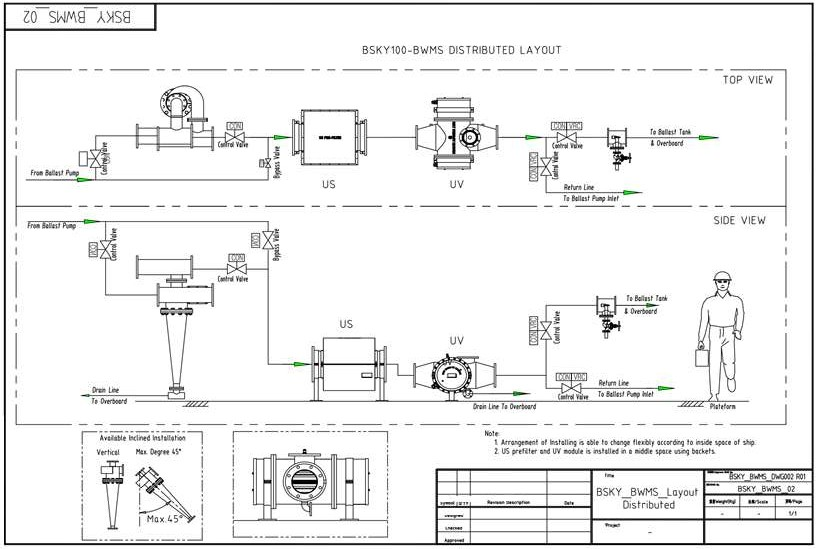

Ballast Water Management System (BWMS) adalah sistem wajib bagi kapal yang berlayar internasional sejak IMO Ballast Water Management Convention berlaku efektif September 2017. Konvensi ini mensyaratkan semua kapal mengolah air ballast sebelum dibuang di pelabuhan tujuan, untuk mencegah perpindahan organisme invasif antar ekosistem laut yang dapat merusak lingkungan dan industri perikanan lokal.
PT Tirta Sumber Makmur menyediakan integrasi BWMS untuk kapal niaga, tanker minyak, kapal kontainer, kapal penumpang, dan offshore platform. Sistem yang kami integrasikan menggunakan kombinasi filtrasi mekanik (hydrocyclone + ultrasonic prefilter) dan disinfeksi UV bertekanan tinggi — sepenuhnya tanpa bahan kimia sehingga aman bagi lingkungan laut tujuan dan tidak meninggalkan residu di tangki ballast. Kapasitas standar 100 m³/jam, dengan opsi paralel untuk kebutuhan kapasitas lebih besar.
Dua Tipe Konfigurasi: Integrated & Distributed
Pilihan konfigurasi disesuaikan dengan kondisi engine room dan tipe proyek (kapal baru atau retrofit). Keduanya menggunakan teknologi inti yang sama (hydrocyclone + UV) dan memenuhi standar IMO D-2.
Integrated Mounting
Semua komponen dalam satu skid pre-assembled. Cepat dipasang, footprint padat. Direkomendasikan untuk kapal baru atau engine room dengan ruang yang masih luas.
| Module Part (L×W×H) | 1850 × 1200 × 2316 mm |
| Berat total | 1560 kg |
| Kapasitas | 100 m³/h |
Distributed BSKY100
Komponen terpisah (CY module, US prefilter, UV module, control rack) — bisa dipasang di ruang berbeda yang tersedia. Ideal untuk retrofit kapal existing dengan keterbatasan ruang.

| CY Module (L×W×H) | 458 × 585 × 1533 mm |
| Berat total | 1020 kg |
| Kapasitas | 100 m³/h |
Spesifikasi Teknis Lengkap
| Rated Treat Capacity | 100 m³/jam |
| BWMS Power Consumption | 33,5 kW (saat treatment aktif) |
| Inlet / Outlet Line Size | DN125 |
| Return Line Size | DN100 |
| Drain Pipe Size | DN65 |
| Control Rack (L×W×H) | 845 × 700 × 1215 mm |
| Local Control Panel (L×W×H) | 800 × 300 × 1050 mm |
| Remote Control Panel (L×W×H) | 500 × 200 × 450 mm |
| Inclined Installation | Vertikal atau miring hingga 45° |
| Material Pipa Ballast | SCH40 hot-dip galvanized |
| Sampling Port | SP1 + SP2 sesuai G2 IMO Sampling Guidelines |
Komponen Utama Sistem
Diagram P&ID Sistem

P&ID lengkap BSKY BWMS dengan return pipe — menunjukkan jalur ballast pump, hydrocyclone, US prefilter, UV module, sampling port, dan return-overboard line.
Layout Distributed Mounting (Top & Side View)

Layout drawing tipe distributed BSKY100 — penyusunan komponen US prefilter dan UV module dapat menyesuaikan ruang yang tersedia di engine room kapal, termasuk instalasi miring hingga 45°.
Cara Kerja Pengolahan Air Ballast
Ada dua siklus operasi: ballasting (saat menerima air laut ke tangki) dan deballasting (saat membuang air ballast di pelabuhan tujuan). Pada kedua siklus, air harus diolah agar memenuhi standar IMO D-2.
- Tahap 1 — Hydrocyclone (CY10): Air dari ballast pump masuk ke hydrocyclone yang memutar air dengan gaya sentrifugal, memisahkan pasir, sedimen kasar, dan partikel berat ke bagian bawah untuk dibuang ke bilge.
- Tahap 2 — Ultrasonic Prefilter (US35): Air pre-filtered melewati saringan otomatis yang menggunakan gelombang ultrasonic untuk mencegah clogging. Filter menahan partikel ≥50 µm — dimana sebagian besar zooplankton, larva, dan organisme bertahan.
- Tahap 3 — UV Disinfection (UV408): Air melewati chamber UV-C dengan dosis tinggi (>250 mJ/cm²) yang merusak DNA bakteri, virus, alga, dan mikroorganisme planktonik agar tidak dapat bereproduksi.
- Tahap 4 — Sampling & Discharge: Sampling port (SP1, SP2) dipasang sesuai G2 Guidelines IMO untuk Port State Control inspection. Air yang sudah ditreat masuk ke ballast tank atau dibuang ke laut tujuan.
Sistem dapat di-bypass via Bypass V/V untuk kondisi darurat (mis. perairan dengan kandungan sedimen ekstrem) — namun bypass ini harus dilaporkan dalam Ballast Water Record Book sesuai BWM Convention.
Aplikasi & Tipe Kapal
Standar & Sertifikasi
- IMO BWM Convention 2004 — sistem dirancang memenuhi Regulation D-2 (Performance Standard) yang menjadi rujukan global sejak 2017.
- IMO G8 Type Approval Guidelines — tahapan testing & approval untuk equipment BWMS, termasuk land-based test dan shipboard test.
- BKI (Biro Klasifikasi Indonesia) — sistem dapat di-class oleh BKI untuk kapal berbendera Indonesia. TSM mendampingi proses class survey hingga sertifikat terbit.
- Class Society lain — kompatibel dengan ABS, DNV, Lloyd's Register, BV, RINA, NK untuk kapal yang ber-class IACS member.
- SCH40 hot-dip galvanized piping — material pipa ballast sesuai best practice maritime engineering, tahan korosi air laut jangka panjang.
Studi Kasus & Referensi
Kapal Patroli & KRI — TSM telah berpengalaman lebih dari 24 tahun mengintegrasikan sistem pengolahan air di atas kapal, termasuk SWRO watermaker untuk Kapal Republik Indonesia (KRI). Pengalaman engineering yang sama kami gunakan untuk integrasi BWMS — memahami constraints ruang engine room, vibration tolerance, dan standar BKI yang berlaku.
Offshore Platform & OSV — Untuk klien seperti Halliburton dan Wintermar di sektor offshore, kebutuhan ballast treatment menjadi makin penting seiring tightening regulation IMO. TSM menawarkan retrofit BWMS yang minim downtime dengan pre-fabrication di workshop dan modular installation di galangan.
Pertanyaan yang Sering Ditanyakan
Apa itu BWMS dan kenapa kapal saya wajib pasang?
BWMS (Ballast Water Management System) adalah sistem yang mengolah air ballast kapal sebelum dibuang ke laut tujuan. Sejak IMO BWM Convention berlaku efektif 2017 dengan standar D-2, semua kapal yang berlayar internasional dengan kapasitas ballast lebih dari 8 m³ wajib memasang BWMS. Tujuannya mencegah perpindahan organisme invasif antar ekosistem laut.
Apa perbedaan tipe Integrated dan Distributed BSKY100?
Tipe Integrated menyatukan semua komponen dalam satu skid berdimensi 1850×1200×2316 mm, berat 1560 kg — cocok untuk kapal baru atau ruang mesin yang masih luas. Tipe Distributed BSKY100 memisahkan komponen sehingga bisa dipasang di ruang terpisah, total berat 1020 kg — ideal untuk retrofit kapal lama dengan ruang terbatas. Keduanya berkapasitas treat 100 m³/jam.
Apakah BWMS PT TSM bersertifikat BKI dan IMO?
Ya. Sistem BWMS yang kami integrasikan dirancang sesuai persyaratan IMO BWM Convention 2004 (D-2 standard) dan dapat di-class oleh BKI maupun societies lain seperti ABS, DNV, atau Lloyd's Register. Tim TSM mendampingi proses Type Approval dan Commissioning Test sesuai G8 Guidelines IMO.
Berapa konsumsi listrik BWMS dan apakah genset kapal cukup?
Konsumsi BWMS 100 m³/h adalah 33,5 kW saat treatment aktif. Karena BWMS hanya menyala saat ballast/deballast operation (biasanya di pelabuhan), demand-nya tidak constant. Genset kapal niaga umumnya cukup, namun engineer TSM melakukan power balance check sebelum instalasi untuk memastikan tidak ada konflik dengan beban kritis lain.
Bagaimana cara kerja teknologi UV+filtrasi pada BWMS ini?
Air ballast masuk melalui Hydrocyclone (CY10) untuk memisahkan pasir dan partikel kasar, kemudian melewati Ultrasonic prefilter (US35) yang membersihkan partikel ≥50 µm, lalu disinari UV dengan dosis tinggi pada modul UV408 untuk membunuh bakteri, virus, dan organisme planktonik. Sistem tidak menggunakan bahan kimia (chemical-free) sehingga aman untuk lingkungan laut tujuan.
Apakah TSM menyediakan instalasi dan service untuk BWMS?
Ya. TSM menyediakan paket lengkap: studi kelayakan retrofit, desain piping integration, supply equipment, supervisi instalasi di galangan, commissioning + IMO Type Approval Test, training crew, hingga maintenance contract berkala. Tim service kami bisa dimobilisasi ke seluruh galangan utama Indonesia (Surabaya, Batam, Jakarta, Semarang).